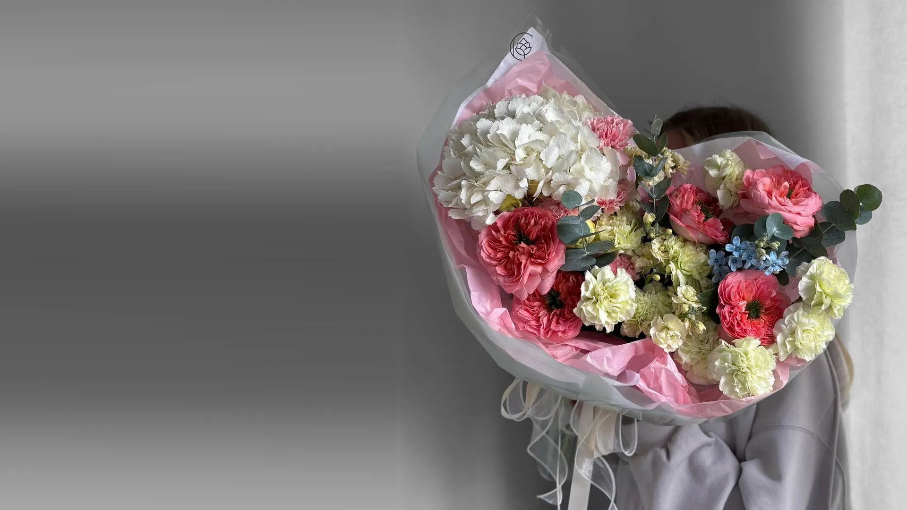
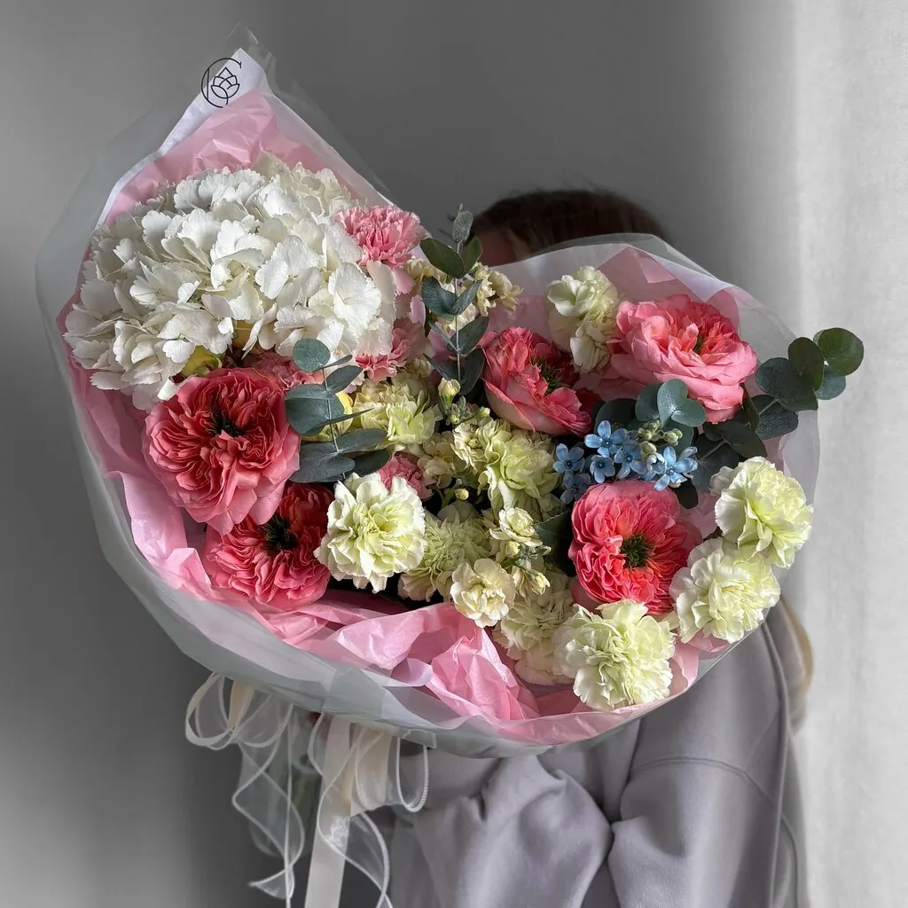
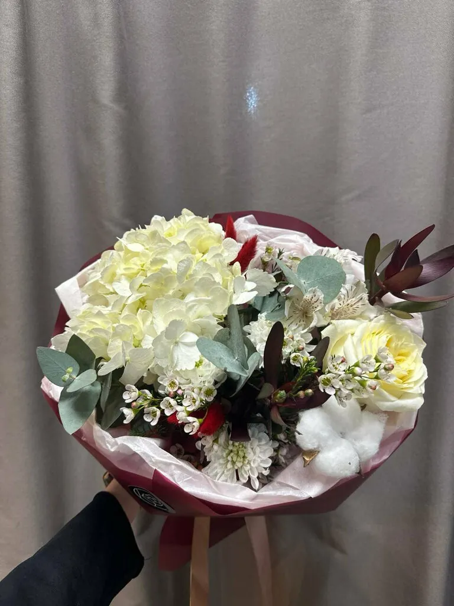
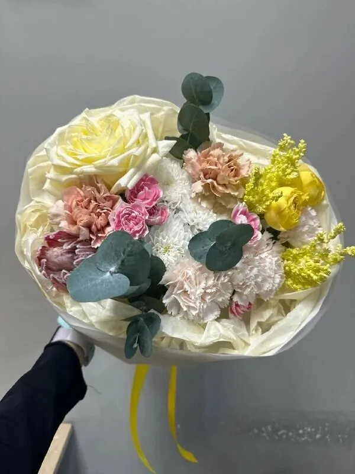
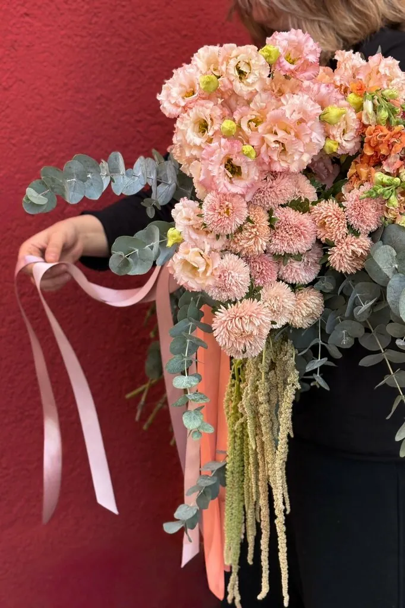
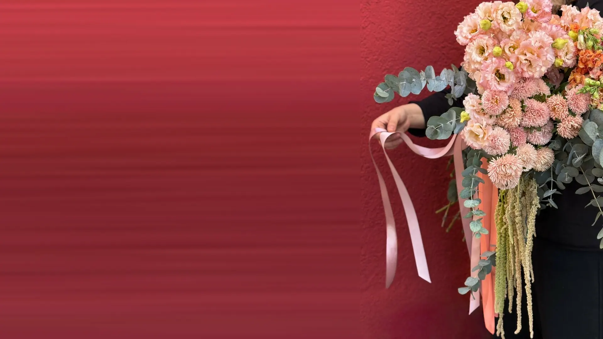

"Очень красивые букеты, супер коммуникация: быстро отвечают, очень оперативно доставляют, заказывала удаленно уже два раза, все остались в восторге"
Екатерина Сидорова · 31 октября 2026 · отзыв на Яндекс.Картах
Букеты с доставкой по Новосибирску: 5,0 на Яндекс.Картах
Сборные букеты, композиции и подарочные наборы. По отзывам, доставляют быстро и отвечают сразу, а заказывать можно и издалека.
5,059 отзывов на Яндекс.КартахЗа что хвалят Сибирь
Три вещи, которые повторяются в отзывах на Яндекс.Картах.
Быстро отвечают
"...супер коммуникация: быстро отвечают..." - Екатерина Сидорова
Оперативно доставляют
"...быстро и оперативно за пару часов доставили красивый букет" - Вероника Клемина
Учитывают пожелания
"...помогли с сюрпризом для подруги, учли все пожелания, доставили вовремя" - Кира Кропотова
Напишите в Telegram, какой нужен букет и к какому поводу. Заказывать можно и удалённо: в отзывах пишут про заказ из другого города.
Букет под повод, а не наоборот
Скажите, для кого и по какому поводу
День рождения, сюрприз для подруги, просто так: от повода зависят цветы и размер. В отзыве про сюрприз: учли все пожелания.
Сборный букет, композиция или набор
Три позиции с ценами - ниже на странице. В отзывах хвалят разнообразный выбор даже для маленького бюджета.
Каталог во ВКонтакте
Фото букетов - в ВК-маркете: можно выбрать заранее и написать, что понравилось. К букету есть поздравительные открытки.
Доставят быстро, платить можно картой
По отзывам, доставляют за пару часов, а заказывают и удалённо. Оплата картой.
Букеты с карточки
Нажмите на фото, чтобы рассмотреть крупно. Второе нажатие приближает.




Сколько стоит
Три позиции из прайса на Яндекс.Картах. Остальные букеты - в каталоге ВК-маркета.
-
Сборный букет
2 490 руб. -
Цветочная композиция
4 290 руб. -
Подарочный набор
2 890 руб.
- ОплатаКартой.
- ДоставкаПо отзывам - за пару часов. Стоимость и условия доставки уточняйте при заказе.
- Другие ценыОстальные букеты и композиции - в каталоге ВКонтакте. Точные цены уточняйте при заказе.

Три шага до букета
Напишите в Telegram
Скажите, для кого букет и по какому поводу, и назовите бюджет. Можно и во ВКонтакте, и по телефону.
Выберите букет
Сборный букет, цветочная композиция или подарочный набор: цены выше. Фото других букетов - в каталоге ВК-маркета.
Получите или заберите
По отзывам, доставляют за пару часов, а заказывают и из других городов. Магазин: ул. Восход, 46, ежедневно 9:00-21:00.
Свадьба и другие поводы
- Свадебная флористикаЕсть среди услуг Сибири. Напишите дату и что хотите увидеть.
- Поздравительные открыткиК букету можно взять открытку.
- Оплата картойПлатить можно банковской картой.
Что пишут на Яндекс.Картах
-
"Очень красивые букеты, супер коммуникация: быстро отвечают, очень оперативно доставляют, заказывала удаленно уже два раза, все остались в восторге"
-
"Очень помогли с сюрпризом для подруги, учли все пожелания, доставили вовремя"
-
"Очень быстро и оперативно за пару часов доставили красивый букет. Разнообразный выбор даже для маленького бюджета"
Отзывы скопированы с карточки на Яндекс.Картах без правок, оценка у каждого - 5 из 5.
Назовите повод и бюджет
Напишите в Telegram, какой нужен букет и к какому поводу. Каталог с фото - во ВКонтакте.
Второй канал - ВКонтакте, там каталог ВК-маркета. Не любите писать - звоните.